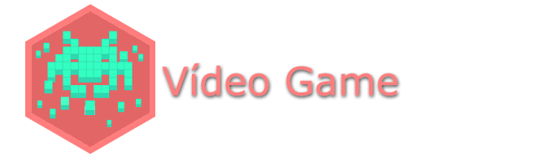

Hobbies
Nesta página são listados as principais atividades cotidianas e hobbies exercidos no tempo livre.
Sou fã de música, e embora não me considere especialista no assunto busco sempre conhecer novos estilos e gêneros musicais para decidir o que ouvir.
Meus gêneros preferidos são: Indie pop, Indie rock, Rock, Alternativo, Twee, Post-rock, Post-punk, New wave, Synthpop, Electropop, yé-yé, Folk, Classic rock, Shoegaze, Dream pop, MPB, Bossa Nova, Samba, JPOP, JRock, Shibuya kei, City pop, Ambiente, Jazz, Blues, Classica
20 bandas influentes
|
Veja minha lista completa dos principais artistas que ouço em last.fm/user/felipebf
Leio basicamente 4 gêneros: Clássicos mundiais, Ficção científica, Não Ficção e Literatura brasileira.
Concluo em média 3 livros ao mês. Variando entre 2 a 5 livros. Sou um completo desistente e testo muitos livros pelas 100 primeiras páginas, caso não me cative abandono. Ou seja, leio mais livros que os concluo.
Tenho como objetivo conseguir correr 10km 3x na semana, mas ainda estou longe disso. Atualmente somente caminho 6km no bairro que moro quase que diariamente. Mas um dia correrei.

Escrevo textos para meu blog pessoal encontrado aqui neste site na aba superior.
Além disso, semanalmente redijo e-mail e cartas para pen pals de todo o mundo. Pratico troca de correspondência internacional e de e-mail desde 2012 e tenho certa experiência no assunto. Manténho cerca de 10 amizades virtuais simultaneamente e gasto facilmente entre 5 e 8 horas de meu fim de semana escrevendo respostas semanais a todos que me escrevem.
Conhecer novas culturas e realidades através de texto é algo que mantém este hobby, além de manter amizades virtuais duradouras com pessoas com história de vida tão diferentes.
Atualmente não estou mais trocando cartas físicas devido a problemas de entrega e perda de cartas pelos correios.
Caso você deseje ser meu pen pal, contacte-me por e-mail.

Jogo videogames desde criança, em especial os seguintes sub gêneros: Adventure point n click, Plataforma 2D, RPG, Puzzles, RTS.
Não sou fã de jogos de esportes, tiro em primeira pessoa, de ambiente medieval, dificuldade muito elevada, aventura em terceira pessoa.
As plataformas preferidas são: NES, SNES, DS, 3DS, PC.
Jogo em média de 1 a 3 horas semanais, mas pode chegar a extremos de 6 horas diárias dependendo do jogo.
Jogos preferidos
|
Além desses hobbies, tenho o hábito de ir a parques no final de semana caminhar ou aproveitar uma boa leitura ao sol, tomar um tereré ou chimarrão.